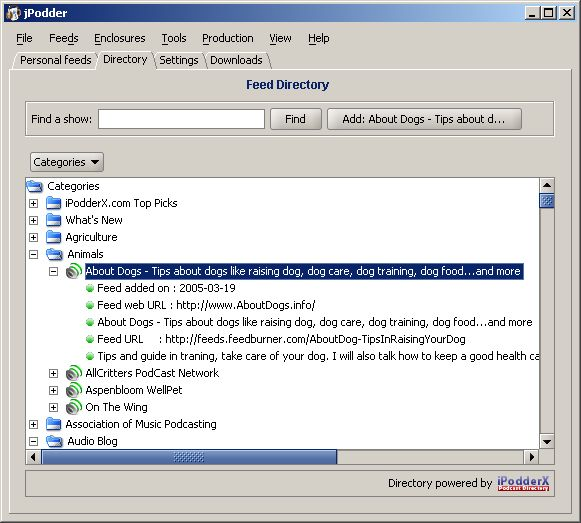
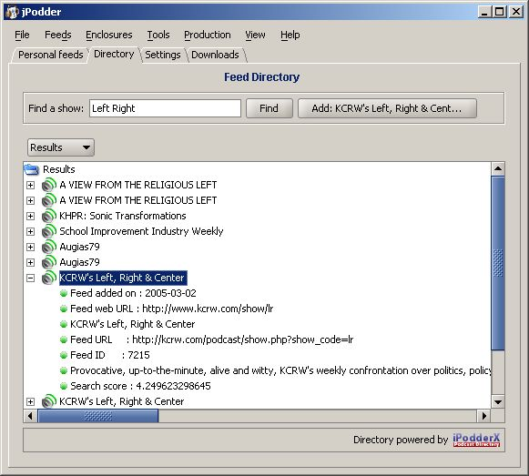

The directory tab allows you to search for a podcast you are interested in. The directory is provided by iPodderX and queried online in order to bring you the latest and greatest. The directory is like the yellow pages where you can browse through categories to see what is available. In addition you can search the directory for a podcast

The directory view displays a tree for the categories of available feeds.
| Find a show | Lets you enter a query string to seach for a podcast |
| Find | Click here to execute the search |
| Add ... | If you selected a feed in the list below you can click here to add this feed to you list of personal feeds |
| Indicates if you look at the list of all categories or the result set of a query (find) but you can use it to switch between the two views |
Now let us try to find KCRW's show 'Left, Right & Center'. In this case we enter 'Left Right' into the Find a show field and hit the Find button. That is now there result: 